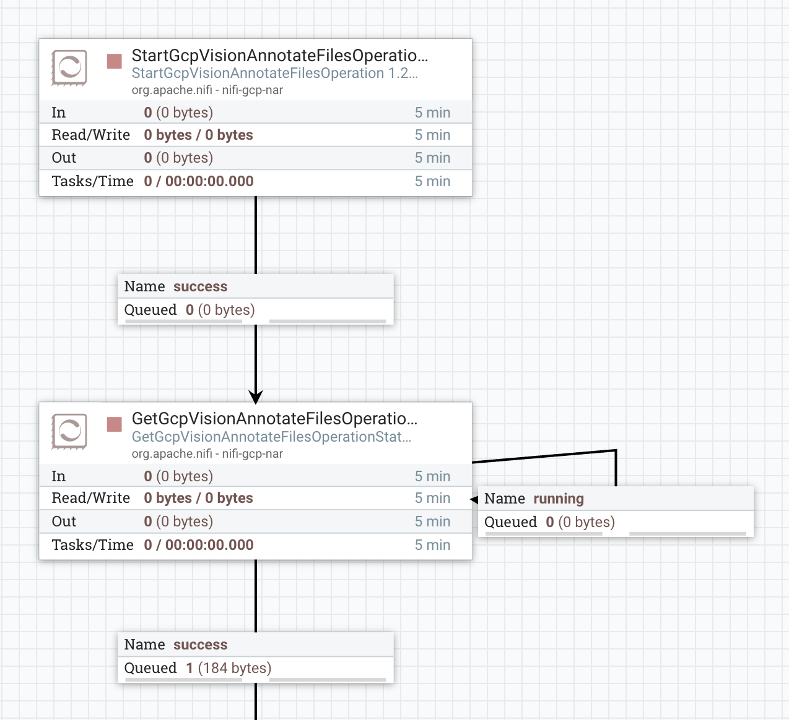

Prerequisites
StartGcpVisionAnnotateFilesOperation is designed to trigger file annotation operation. This processor should be used in pair with GetGcpVisionAnnotateFilesOperationStatus Processor. FlowFile will contain the serialized response that contains the result and additional metadata as it is documented in Google Vision API Reference.
The JSON Payload is a request in json format that documented in Google Vision REST API reference .
Payload can be feed to the processor via JSON Payload property or as a flow file content. Property has higher precedence over FlowFile content.
JSON payload template example:
{
"requests": [
{
"inputConfig": {
"gcsSource": {
"uri": "gs://${gcs.bucket}/${filename}"
},
"mimeType": "application/pdf"
},
"features": [{
"type": "DOCUMENT_TEXT_DETECTION",
"maxResults": 4
}],
"outputConfig": {
"gcsDestination": {
"uri": "gs://${gcs.bucket}/${filename}/"
},
"batchSize": 2
}
}]
}
Prerequisites
bucket parameter and its value will be the name of your GCS bucketCreate the following flow
Keep the default value of JSON PAYLOAD property in StartGcpVisionAnnotateImagesOperation
Execution steps:
operationKey flow file attributeoperationKey.